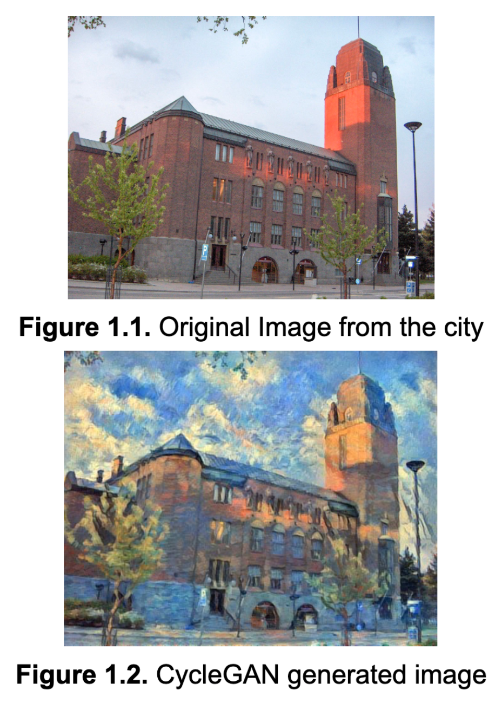

The aim of this project is to explore the feasibility of using Machine Learning methods
to predict the main outcomes of a BPS simulations given a set of initial conditions.
The same dataset has been used to train both Random Forets and XGBoost Classifiers for performance comparison.
We created digital traveler in order to collect quality records, manage quality control plan activities in a smart way,
and to detect key failure points during operators activity by analyzing the patterns in KPI data. Naming the application as Atlas Jet,
it is designed to extend more properties such as automatic certificate production, activity management, etc.
The software is created in Python with the help of PyQT5 and utilizes an artificial intelligence(deep learning)
which is trained by using transfer learning technique at the background with Tensorflow framework. The user may install, upload a picture,
enter some master data and hit the predict button. Then the results will appear on the screen!
This study will provide a comparison between two ways of customizing a pre-trained model using transfer
learning approach by fine-tuning and feature extraction, thus will show an effective way of using pre-trained models
for classifying between COVID-19, Pneumonia, and Healthy images. It is originality comes from this method comparison,
in literature people tend to compare different pre-trained base models performance rather than methods.
Temporomandibular Joint Disorder (TMJ) is a painful jaw disorder that stems
from the dislocation of the articular disc which is flexible and elastic and serves as a cushion between the two jaw bone surfaces.
Dataset which consists of 565 MRI images belonging to 8 groups has been prepared and splitted into train, validation and test sets by hand manually.
Transfer learning on a training set of 361 images and 5 different model structures MobileNetV2, Densenet121, Xception, InceptionV3, Resnet101 have been
used for training, 82 images for validation, and 121 images have been used for testing. Also Grad-CAMs which are developed to annotate areas with disorders or
having the probability of disorder has been used for each model.
Comparing both the cortical and subcortical regions on the brain in terms of dopamine lateralization and
creating a predictive machine learning algorithm which will also apply XAI to extract most important features.
Research aims to extract which regions are more salient then others in terms of lateralization while taking the age and sex factor into account.
This study is unique in the literature concerning it's dopamine focus and extensive region of interests. I am working in
collaboration with post-doctoral researchers and doctors, utilizing data wrangling, statistics, and machine learning skills to conduct
an exploratory data analysis with a predictive machine learning algorithm.
Training LSTM and XGBoost models for time-series forecasting, and researching & applying XAI methods to extract most important weights
that weighted the most, so that we are unpacking the black box artificial intelligence models.
Took part in the development of database response time lateness root-cause detection application for the IT Services in use (Python 3.8) utilizing diverse machine learning algorithms.
The application provides a list of services to be picked and returns a correlation analysis within a chosen time interval by the user.
September 2019 - August 2020
This study evaluates the effect of noise on student-surgeons’ performance in three microsurgery related tasks.
The experiments were conducted in Kuopio University Hospital where 21 students volunteered for the study.
The participants performed the three tasks in both a silent environment and a noisy environment where the
participants were subject to a 85db noise played via headphones. Their performance was visually recorded and
their biometrics as well as eye tracks were collected by specialized machinery [5], [6]. After finishing their tasks,
the students self-evaluated how demanding the procedure felt for them and the video footage of their performance
was given for two blinded surgeons to evaluate for the quality, efficiency and handling of it. We performed a two sample t-test on the quality of knot, efficiency and handling and the reported distractions and mental, physical
and temporal demands. We found significant difference (p=0.05) in the performance evaluations in three of
those areas, namely: Efficiency, physical demands and distractions. The assessed performance efficiency was
reduced by 15% while the reported physical demands increased by 88% and distractions by 156%.
September 2019 - August 2020
In the core of the EPIC-project is the Epic Challenge educational program. In Epic Challenge, students learn how to solve complex problems
creatively by applying a problem-solving method created by NASA astronaut Dr. Charles Camarda to complex challenges under the challenge theme
of Sustaining Humans on Mars.
September 2019 - August 2020
The Visualize Interactive is a desktop software developed to visualize physiological signals during the activities called mesh alignment,
knotting, and go-around which are done by the participants of the research team who participated in the synchronization and analysis of the biomarkers under noise and stress.
September 2019 - August 2020

Our aim was to implement transformation from the city images to Monet’s style images. This report is constructed with seven parts. Part one, Overview, shares the main
overview of this project Pix2Art. The second and third parts, Introduction and Information About The CycleGAN, briefly explain the usage of a CycleGAN. The fourth part,
Data Collection, and Preprocessing shows how to collect and proceed image data. The fifth part, Experiments and Outcomes, and Results describe the experiment performed in the Pix2Art project and its outcomes.
The seventh part, Reference, shows what articles are cited in this report. The source images shown in this report are from images taken by our members and/or Berkeley’s website.
September 2021 - January 2021
This repository is created in order to analyze why COVID-19 spreading faster in North Italy when compared to other regions of Italy.
Why I would like to analyze this, understand this? Because it will shed light on the knowledge of which cities have strong connections or relations with each other,
and which cities are in danger when we have seen a cluster of cases in one city. From there, it allows us to estimate invasion risk, and in more advance learn what
are the conditions for a local outbreak to spread globally.